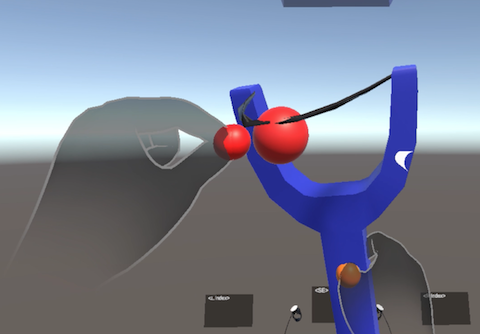
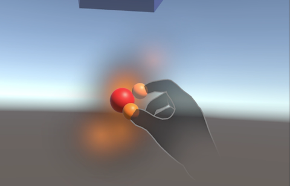

5. サンプルシーン
FF-SDKの機能をすぐに体験でき、開発時の参考にすることができるサンプルシーンが用意されています。
5.1. サンプルシーンのリスト
Assets/Commissure/HapticsSystem/Samples/HelloHaptics に以下のサンプルシーンが用意されています。
これらのシーンはQuest Linkで接続されたMeta Questで動作します。
| シーン | 概要 | |
|---|---|---|
| HelloHaptics.unity | 他のサンプルへの入口となるシーン | |
| Scenes/BallInBox.unity | ボールが中に入った箱を揺らした時の感触を再現 |  |
| Scenes/Slider.unity | スイッチを操作する感覚を再現 | |
| Scenes/SlingShot.unity | ゴムを引っ張った時の張力と離した時の衝撃を再現 |  |
| Scenes/Squeeze.unity | 物体を握り潰す触覚を再現 |  |
また、それぞれのシーンにはシーン名末尾に _TofAR がついた、ToF ARで動作するシーンも用意されています。
5.2. サンプルシーンのセットアップ
- 3.3 Meta XR SDKのセットアップ に従い、Meta Quest用の Universal 3D テンプレートを適用したUnityプロジェクトを作成します。
- 3.1 FF-SDK-Unityのセットアップ に従い、FF-SDKのセットアップを行います。
- FF-SDK-Unity_Samples_vx.x.x.unitypackage をインポートします。
- Unity Editorのメニューの File / Build Settings を開き、動作させたいサンプルシーンを Scenes in Build に追加します。